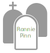

|

|
Inverno 2016
Nuovo cimitero di Camberwell, Londra
Andrew O'Hagan, immerso nel freddo dell'inverno inglese, sta seguendo il sentiero
che porta alla cappella del cimitero. Sulle lapidi ci sono alcuni nomi noti alle cronache inglesi.
La sua attenzione però si posa sui nomi degli sconosciuti, giovani ragazzi e bambini che sono morti
e sono lì sepolti tra i gicattoli e i ricordi che altri sconosciuti hanno portato per loro.
Nunc nec felis ut risus bibendum sollicitudin. Integer ac sagittis diam, at consectetur quam.
Etiam in tempor arcu. Vestibulum porta rutrum leo, non cursus magna. Nullam tincidunt cursus libero,
eu sollicitudin velit maximus at. Sed dictum dolor nec ultrices volutpat.
Donec vulputate condimentum massa a commodo.
|